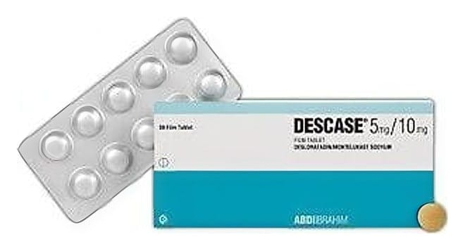

Descase 5 mg / 10 mg Film Kaplı Tablet, 30 Adet

Ne için kullanılır
KT · Bölüm 1DESCASE 5 mg desloratadin 10 mg montelukasta eşdeğer 10,40 mg montelukast sodyum olarak iki farklı etken madde içeren sarı renkli yuvarlak, bikonveks, film kaplı tabletlerdir. DESCASE 30 ve 90 tablet içeren Alu/Alu blister ambalajlarda piyasaya sunulmaktadır. DESCASE alerjik rinit (nezle) ve alerjik rinitle birlikte olan astım tedavisinde ve semptomlarının giderilmesi ve uzun süren sebebi bilinmeyen ürtiker (kurdeşen) (kronik idiyopatik ürtiker) belirtilerinin giderilmesi için reçetelenir
İçeriğinde bulunan laktoz monohidrat inek sütü kaynaklıdır. Bu ilacı kullanmaya başlamadan önce bu KULLANMA TALİMATINI dikkatlice okuyunuz, çünkü sizin için önemli bilgiler içermektedir.
• Bu kullanma talimatını saklayınız. Daha sonra tekrar okumaya ihtiyaç duyabilirsiniz. • Eğer ilave sorularınız olursa, lütfen doktorunuza veya eczacınıza danışınız. • Bu ilaç kişisel olarak sizin için reçete edilmiştir, başkalarına vermeyiniz. • Bu ilacın kullanımı sırasında, doktora veya hastaneye gittiğinizde doktorunuza bu ilacı kullandığınızı söyleyiniz. • Bu talimatta yazılanlara aynen uyunuz. İlaç hakkında size önerilen dozun dışında yüksek veya düşük doz kullanmayınız.